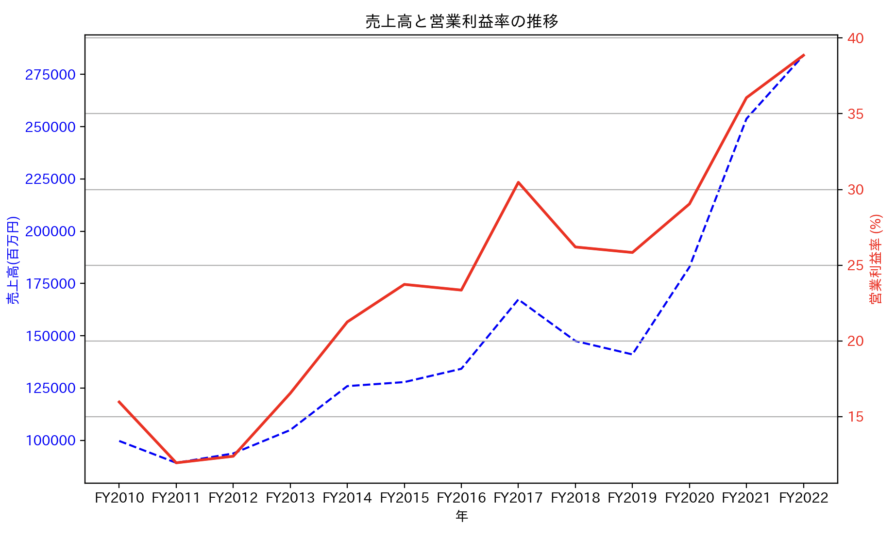

企業研究(経済観点)
営業利益率の推移(年次)についての考察
青：売上高 赤：営業利益率
最初の印象は，リーマンショックと米中貿易摩擦以外の年次において，成長が著しいのが印象的でした．
＿＿＿＿＿＿＿＿＿＿＿＿＿＿＿＿＿＿＿
また，FY2012~FY2017とFY2019~FY2022の推移に関して．
後者は営業利益がさらに上がっている．
通常，市場の変化によって売上高が増加したとしても， それに伴って製造コストや販売管理費などの経費も増加するため， 必ずしも利益率が向上するとは限らないが，営業利益率も向上している
↓
考えられる要因として，・PMI活動などによる高付加価値が反映
・日本のメーカーが苦手とする量産に関して，"切る"/"削る"/"磨く"に特化して， 世界でシェアを握っているからこそ，必要な時に量産体制が整えられるから．
・disco valuesやユニークな精度が様々な箇所で一貫しており， 信頼性/透明性が高いことから，投資対象になりやすく， 必要なときに設備投資や生産工場の増設が実現できるから． (時価総額ランキング36位更新)
＿＿＿＿＿＿＿＿＿＿＿＿＿＿＿＿＿＿＿
＿＿＿＿＿＿＿＿＿＿＿＿＿＿＿＿＿＿＿
(決算短信 補足情報(XLS)について，2/19日のIR担当の方が説明会が開催された後に， 私が興味を持った箇所に関して，データサイエンスで学んだことを活かして， データをプロットして表示しました．)
import pandas as pd
import matplotlib.pyplot as plt
import japanize_matplotlib
data = pd.read_csv("比較.csv")
#営業利益率を計算して追加
data['営業利益率'] = data['営業利益']/data['売上高'] * 100
# fig には図全体のオブジェクト
# ax1 には軸等のオブジェクトを格納
#1つのグラフに2つ以上のグラフを記述する場合こうするっぽい
figure,ax1=plt.subplots(figsize=(10,6))
#軸ラベルのる設定
ax1.set_xlabel('年')
ax1.set_ylabel('売上高(百万円)', color="blue")
ax1.plot(data['年度'], data['売上高'],linestyle="--",color="blue")
ax1.tick_params(axis='y', labelcolor="blue")
# 営業利益率の推移をプロットするために第二のY軸を追加(.twinx)
ax2 = ax1.twinx()
ax2.set_ylabel('営業利益率 (%)', color="red")
ax2.plot(data['年度'], data['営業利益率'], color="red",linewidth=2)
ax2.tick_params(axis='y', labelcolor="red")
plt.title('売上高と営業利益率の推移')
plt.grid(True)
plt.show()
＿＿＿＿＿＿＿＿＿＿＿＿＿＿＿＿＿＿＿
その他
・PBRが半導体業界の中でもかなり高い水準
・これだけ時価総額が大きければ，M%Aをすすめて大きくしていける
→ 量よりも質を重視しているから．M&A等大きくなること自体考えてない
(個人的な考察)M&Aしようとしても，disco valuesや独特な取り組みを他社の方々が 適合することが難しくPMIが進まない点もあるのではないか
＿＿＿＿＿＿＿＿＿＿＿＿＿＿＿＿＿＿＿